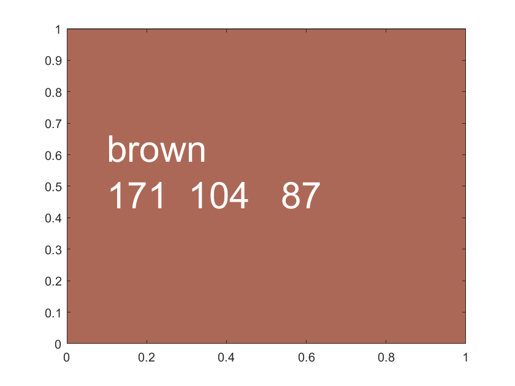

Chapter 6 Graphs
6.1 Figure Components
6.1.1 Matlab Graph Safe Colors for Web, Presentation and Publications Examples
Go back to fan’s MEconTools Package, Matlab Code Examples Repository (bookdown site), or Math for Econ with Matlab Repository (bookdown site).
6.1.1.1 Good Colors to Use Darker
Nice darker light colors to use in matlab.
close all
blue = [57 106 177]./255;
red = [204 37 41]./255;
black = [83 81 84]./255;
green = [62 150 81]./255;
brown = [146 36 40]./255;
purple = [107 76 154]./255;
cl_colors = {blue, red, black, ...
green, brown, purple};
cl_str_clr_names = ["blue", "red", "black", "green", "brown", "purple"];
for it_color=1:length(cl_colors)
figure();
x = [0 1 1 0];
y = [0 0 1 1];
fill(x, y, cl_colors{it_color});
st_text = [cl_str_clr_names(it_color) num2str(round(cl_colors{it_color}*255))];
hText = text(.10,.55, st_text);
hText.Color = 'white';
hText.FontSize = 30;
snapnow;
end6.1.1.2 Good Colors to Use Lighter
Nice ligher colors to use in matlab.
close all
blue = [114 147 203]./255;
red = [211 94 96]./255;
black = [128 133 133]./255;
green = [132 186 91]./255;
brown = [171 104 87]./255;
purple = [144 103 167]./255;
cl_colors = {blue, red, black, ...
green, brown, purple};
cl_str_clr_names = ["blue", "red", "black", "green", "brown", "purple"];
for it_color=1:length(cl_colors)
figure();
x = [0 1 1 0];
y = [0 0 1 1];
fill(x, y, cl_colors{it_color});
st_text = [cl_str_clr_names(it_color) num2str(round(cl_colors{it_color}*255))];
hText = text(.10,.55, st_text);
hText.Color = 'white';
hText.FontSize = 30;
snapnow;
end
6.1.1.3 Matlab has a graphical tool for picking color
Enter uisetcolor pick color from new window and color values will appear uisetcolor
% Color Pickers
% uisetcolorPicked Color use
figure();
hold on;
x = rand([10,1]);
y = rand([10,1]);
% Then can use for plot
plot(x,y,'Color',[.61 .51 .74]);
% Can use for Scatter
scatter(x, y, 10, ...
'MarkerEdgeColor', [.61 .51 .74], 'MarkerFaceAlpha', 0.1, ...
'MarkerFaceColor', [.61 .51 .74], 'MarkerEdgeAlpha', 0.1);6.1.2 Matlab Graph Titling, Labels and Legends Examples
Go back to fan’s MEconTools Package, Matlab Code Examples Repository (bookdown site), or Math for Econ with Matlab Repository (bookdown site).
6.1.2.1 Draw A figure Label Title, X and Y Axises with Latex Equations
clear all;
close all;
figure();
% draw some lines
xline0 = xline(0);
xline0.HandleVisibility = 'off';
yline0 = yline(0);
yline0.HandleVisibility = 'off';
hline = refline([1 0]);
hline.Color = 'k';
hline.LineStyle = ':';
hline.HandleVisibility = 'off';
% Titling with multiple lines
title({'Cash-on-Hand given w(k+b),k,z' '$\alpha + \beta = \zeta$'},'Interpreter','latex');
ylabel({'Cash-on-Hand' 'line 2 $\frac{1}{2}$'},'Interpreter','latex');
xlabel({'Index of Cash-on-Hand Discrete Point'...
' $\frac{1}{2} + \alpha + \max + \sum_1^{B}$ Each Segment is a w=k+b; within segment increasing k'...
'For each w and z, coh maximizing k is different'},'Interpreter','latex');
grid on;
grid minor;
6.1.2.2 Matlab Graph Specify Legends Manually
Specify labels manually, note we can use HandleVisibility to control what part of figure show up in legends.
% Generate Random Data
rng(123);
it_x_n = 10;
it_x_groups_n = 3;
mat_y = rand([it_x_n, it_x_groups_n]);
mat_y = mat_y + sqrt(1:it_x_groups_n);
mat_y = mat_y + log(1:it_x_n)';
ar_x = 1:1:it_x_n;
% Start Figure
figure('PaperPosition', [0 0 10 10]);
hold on;
g1 = scatter(ar_x, mat_y(:,1), 30, 'filled');
g2 = scatter(ar_x, mat_y(:,2), 30, 'filled');
g3 = scatter(ar_x, mat_y(:,3), 30, 'filled');
legend([g1, g2, g3], {'near','linear','spline'}, 'Location','best',...
'NumColumns',1,'FontSize',12,'TextColor','black');
% PLot this line, but this line will not show up in legend
hline = refline([1 0]);
hline.Color = 'k';
hline.LineStyle = ':';
% not to show up in legend
hline.HandleVisibility = 'off';
grid on;
grid minor;
title(sprintf('griddedInterpolant comparison, crra utility approximation, interp grid n=%d', it_x_n))
ylabel('Actual Utility Evaluated at c')
xlabel('Approximated Util based on Interpolation')snapnow;6.1.2.3 Given Graph, Graph Subset of Lines and Add Extra Line with Legend
Same plot as before, except we plot only 2 of the three lines and add another line with associated legend entry.
legendCell = cellstr(num2str(ar_x', 'shock=%3.2f'));
xlinemax = xline(min(mat_y, [], 'all'));
xlinemax.Color = 'b';
xlinemax.LineWidth = 1.5;
legendCell{length(legendCell) + 1} = 'max-agg-save';
legend([g1, g3, xlinemax], legendCell([1,3,length(legendCell)]), 'Location', 'best');snapnow;6.1.3 Matlab Graph Matrix with Jet Spectrum Color, Label a Subset Examples
Go back to fan’s MEconTools Package, Matlab Code Examples Repository (bookdown site), or Math for Econ with Matlab Repository (bookdown site).
6.1.3.1 Plot a Subset of Data Matrix with Appropriate Legends
Sometimes we solve a model across many states, but we can only plot at a subset of states, or perhaps we plot at all states, but only show legends/labels for a subset.
In the example below, many lines are plotted, however, only a subset of lines are labeled in the legend.
clear all;
close all;
% Generate Random Data
rng(123);
it_x_n = 10;
it_y_groups_n = 100;
ar_y = linspace(1,2,it_y_groups_n);
mat_y = rand([it_x_n, it_y_groups_n]);
mat_y = mat_y + sqrt(1:it_y_groups_n);
mat_y = mat_y + log(1:it_x_n)' + ar_y;
ar_x = 1:1:it_x_n;
% Jet color Graph All
figure('PaperPosition', [0 0 7 4]);
chart = plot(mat_y);
clr = jet(numel(chart));
for m = 1:numel(chart)
set(chart(m),'Color',clr(m,:))
end
% zero lines
xline(0);
yline(0);
% invalid points separating lines
yline_borrbound = yline(3);
yline_borrbound.HandleVisibility = 'on';
yline_borrbound.LineStyle = ':';
yline_borrbound.Color = 'black';
yline_borrbound.LineWidth = 3;
% Titling
title('Cash-on-Hand given w(k+b),k,z');
ylabel('Cash-on-Hand');
xlabel({'Index of Cash-on-Hand Discrete Point'...
'Each Segment is a w=k+b; within segment increasing k'...
'For each w and z, coh maximizing k is different'});
% Xlim controls
xlim([min(ar_x), max(ar_x)]);
% Grid ons
grid on;
grid minor;
% Legends
legend2plot = fliplr([1 round(numel(chart)/3) round((2*numel(chart))/4) numel(chart)]);
legendCell = cellstr(num2str(ar_y', 'shock=%3.2f'));
legendCell{length(legendCell) + 1} = 'borrow-constraint';
chart(length(chart)+1) = yline_borrbound;
legend(chart([legend2plot length(legendCell)]), ...
legendCell([legend2plot length(legendCell)]), ...
'Location', 'best');6.2 Basic Figure Types
6.2.1 Matlab Graph Scatter Plot Examples
Go back to fan’s MEconTools Package, Matlab Code Examples Repository (bookdown site), or Math for Econ with Matlab Repository (bookdown site).
6.2.1.1 Scatter Plot Example
The plot below as square scatter points, each one with think border. Can set transparency of border/edge and inside separately.
close all;
figure();
size = 100;
s = scatter(1:10,1:10,size);
s.Marker = 's';
% color picked by using: uisetcolor
s.MarkerEdgeColor = [0 0.4471 0.7412];
s.MarkerEdgeAlpha = 0.5;
s.MarkerFaceColor = [.61 .51 .74];
s.MarkerFaceAlpha = 1.0;
s.LineWidth = 10;
grid on;
grid minor;
% 'o' Circle
% '+' Plus sign
% '*' Asterisk
% '.' Point
% 'x' Cross
% 'square' or 's' Square
% 'diamond' or 'd' Diamond
% '^' Upward-pointing triangle
% 'v' Downward-pointing triangle
% '>' Right-pointing triangle
% '<' Left-pointing triangle
% 'pentagram' or 'p' Five-pointed star (pentagram)
% 'hexagram' or 'h' Six-pointed star (hexagram)
% 'none' No markers6.2.1.2 Scatter with Edge and Face Color and Transparency
Here is another way to Set Scatter Edge and Fac Colors and Transparencies.
% Generate Data
rng(123);
it_x_n = 10;
it_x_groups_n = 3;
mat_y = rand([it_x_n, it_x_groups_n]);
mat_y = mat_y + sqrt(1:it_x_groups_n);
mat_y = mat_y + log(1:it_x_n)';
ar_x = 1:1:it_x_n;
% Colors
blue = [57 106 177]./255;
red = [204 37 41]./255;
black = [83 81 84]./255;
green = [62 150 81]./255;
brown = [146 36 40]./255;
purple = [107 76 154]./255;
cl_colors = {blue, red, black, ...
green, brown, purple};
% Scatter Shapes
cl_scatter_shapes = {'s','x','o','d','p','*'};
% Scatter Sizes
cl_scatter_sizes = {100,100,50,50,50,50};
% Legend Keys
cl_legend = {'For Borr', 'Inf Borr', 'For+Inf Br'};
% Plot
figure();
hold on;
for it_m = 1:it_x_groups_n
scatter(ar_x, mat_y(:,it_m), cl_scatter_sizes{it_m}, ...
'Marker', cl_scatter_shapes{it_m}, ...
'MarkerEdgeColor', cl_colors{it_m}, 'MarkerFaceAlpha', 0.8, ...
'MarkerFaceColor', cl_colors{it_m}, 'MarkerEdgeAlpha', 0.8);
cl_legend{it_m} = cl_legend{it_m};
end
legend(cl_legend, 'Location', 'best');
grid on;
grid minor;6.2.2 Matlab Line and Scatter Plot with Multiple Lines and Axis Lines
Go back to fan’s MEconTools Package, Matlab Code Examples Repository (bookdown site), or Math for Econ with Matlab Repository (bookdown site).
6.2.2.1 Six lines Plot
Colors from optimal colors. Generate A line plot with multiple lines using safe colors, with differening shapes. Figures include lines as well as scatter overlayed jointly.
close all
figure();
hold on;
blue = [57 106 177]./255;
red = [204 37 41]./255;
black = [83 81 84]./255;
green = [62 150 81]./255;
brown = [146 36 40]./255;
purple = [107 76 154]./255;
cl_colors = {blue, red, black, ...
green, brown, purple};
cl_legend = {'For Borr', 'Inf Borr', 'For+Inf Br', 'For+Br+Save', 'Bridge Loan', 'For Save'};
cl_scatter_shapes = {'s','x','o','d','p','*'};
cl_linestyle = {'--','-',':','-.','--','-'};
it_sca_bs = 20;
cl_scatter_csizes = {10*it_sca_bs, 20*it_sca_bs, 10*it_sca_bs, 10*it_sca_bs, 5*it_sca_bs, 8*it_sca_bs};
it_line_bs = 2;
cl_line_csizes = {1*it_line_bs, 2*it_line_bs, 1*it_line_bs, 1*it_line_bs, 1*it_line_bs, 2*it_line_bs};
it_x_groups_n = length(cl_scatter_csizes);
it_x_n = 10;
% Generate Random Data
rng(123);
mat_y = rand([it_x_n, it_x_groups_n]);
mat_y = mat_y + sqrt(1:it_x_groups_n);
mat_y = mat_y + log(1:it_x_n)';
ar_x = 1:1:it_x_n;
ar_it_graphs_run = 1:6;
it_graph_counter = 0;
ls_chart = [];
for it_fig = ar_it_graphs_run
% Counter
it_graph_counter = it_graph_counter + 1;
% Y Outcome
ar_y = mat_y(:, it_fig)';
% Color and Size etc
it_csize = cl_scatter_csizes{it_fig};
ar_color = cl_colors{it_fig};
st_shape = cl_scatter_shapes{it_fig};
st_lnsty = cl_linestyle{it_fig};
st_lnwth = cl_line_csizes{it_fig};
% plot scatter and include in legend
ls_chart(it_graph_counter) = scatter(ar_x, ar_y, it_csize, ar_color, st_shape);
% plot line do not include in legend
line = plot(ar_x, ar_y);
line.HandleVisibility = 'off';
line.Color = ar_color;
line.LineStyle = st_lnsty;
line.HandleVisibility = 'off';
line.LineWidth = st_lnwth;
% Legend to include
cl_legend{it_graph_counter} = cl_legend{it_fig};
end
% Legend
legend(ls_chart, cl_legend, 'Location', 'southeast');
% labeling
title('Optimal Savings');
ylabel('Savings Levels');
xlabel('Cash-on-Hand Today');
grid on;snapnow;6.2.2.2 Horizontal and Vertical Lines and 45 Degree
Draw x and y axis, and draw a 45 degree line.
figure();
xline0 = xline(0);
xline0.HandleVisibility = 'off';
xline0.Color = red;
xline0.LineStyle = '--';
yline0 = yline(0);
yline0.HandleVisibility = 'off';
yline0.LineWidth = 1;
hline = refline([1 0]);
hline.Color = 'k';
hline.LineStyle = ':';
hline.HandleVisibility = 'off';
snapnow;
grid on;
grid minor;6.2.3 Matlab Graph Scatter and Line Spectrum with Three Variables
Go back to fan’s MEconTools Package, Matlab Code Examples Repository (bookdown site), or Math for Econ with Matlab Repository (bookdown site).
Generate k + b = w, color for each w, vectors of k and b such that k + b = w for each w
There are two N by M matrix, A anb B.
Values in Matrix A correspond to the x-axis, values in Matrix B correspond to the y-axis.
The rows and columns in matrix A and B have some other meanings. In this case, we will give color to the columns.
The columns is represented by vector C, which is another variable.
Each line a different color representing variable 3
Legend labeling a subset of colors
X and Y could be asset choices, color could be utility, consumption etc.
6.2.3.1 Setting Up Data
close all
clear all
% Bounds
fl_b_bd = -10;
% Max and Mins
fl_w_max = 50;
fl_w_min = fl_b_bd;
fl_kp_max = fl_w_max - fl_b_bd;
fl_kp_min = 0;
% Grid Point Counts
it_w_i = 30;
it_kb_j = 30;
% Grids
ar_w = linspace(fl_w_min, fl_w_max, it_w_i);
ar_kp = linspace(fl_kp_min, fl_kp_max, it_kb_j);
mt_bp = ar_w - ar_kp';
mt_kp = ar_w - mt_bp;
mt_bl_constrained = (mt_bp < fl_b_bd);
mt_bp_wth_na = mt_bp;
mt_kp_wth_na = mt_kp;
mt_bp_wth_na(mt_bl_constrained) = nan;
mt_kp_wth_na(mt_bl_constrained) = nan;
% Flatten
ar_bp_mw_wth_na = mt_bp_wth_na(:);
ar_kp_mw_wth_na = mt_kp_wth_na(:);
ar_bp_mw = ar_bp_mw_wth_na(~isnan(ar_bp_mw_wth_na));
ar_kp_mw = ar_kp_mw_wth_na(~isnan(ar_kp_mw_wth_na));6.2.3.2 Graphing
figure('PaperPosition', [0 0 7 4]);
hold on;
chart = plot(mt_bp_wth_na, mt_kp_wth_na, 'blue');
clr = jet(numel(chart));
for m = 1:numel(chart)
set(chart(m),'Color',clr(m,:))
end
if (length(ar_w) <= 50)
scatter(ar_bp_mw, ar_kp_mw, 5, 'filled');
end
xline(0);
yline(0);
title('Choice Grids Conditional on kp+bp=w')
ylabel('Capital Choice')
xlabel({'Borrowing or Saving'})
legend2plot = fliplr([1 round(numel(chart)/3) round((2*numel(chart))/4) numel(chart)]);
legendCell = cellstr(num2str(ar_w', 'kp+bp=%3.2f'));
legend(chart(legend2plot), legendCell(legend2plot), 'Location','northeast');
grid on;6.3 Graph Functions
6.3.1 Matlab Graph One Variable Function
Go back to fan’s MEconTools Package, Matlab Code Examples Repository (bookdown site), or Math for Econ with Matlab Repository (bookdown site).
6.3.1.1 fplot a Function of X
Given a cubic (polynomial) function, graph it using the fplot function, between some values along the domain of the function. This function is defined everywhere along the real-line. Note that fplot automatically resizes the y-scale to show the full plot clearly.
% close all
figure();
hold on;
% Define a function
syms x
f_x = -7*x^(3);
% Set bounds on the domain
fl_x_lower = -2;
fl_x_higher = 2;
% Graph
fplot(f_x, [fl_x_lower, fl_x_higher])
% Add x-axis and y-axis
xline(0);
yline(0);
% Title and y and y-able
title(['Plot function: ' char(f_x)],'Interpreter',"none");
ylabel('f(x)');
xlabel('x');
% Add grids
grid on;
grid minor;Plot a rational function, that is a function of polynomials.
% close all
figure();
hold on;
% Define a function
syms x
f_x = (x)/(x^2 + 1);
% Set bounds on the domain
fl_x_lower = -2;
fl_x_higher = 2;
% Graph
fplot(f_x, [fl_x_lower, fl_x_higher])
% Add x-axis and y-axis
xline(0);
yline(0);
% Title and y and y-able
title(['Plot function: ' char(f_x)],'Interpreter',"none");
ylabel('f(x)');
xlabel('x');
% Add grids
grid on;
grid minor;Plot a function that is not defined at all points along the real line. Note also that the function always returns a positive value. Note the fplot function automatically identifies the part of the x-axis where the function is not defined, and draws dashed lines to demarcate.
% close all
figure();
hold on;
% Define a function
syms x
f_x = 5*(x^5 - 6*x^2 + 3*x)^(2/3);
% Set bounds on the domain
fl_x_lower = -1;
fl_x_higher = 2;
% Graph
fplot(f_x, [fl_x_lower, fl_x_higher])
% Add x-axis and y-axis
xline(0);
yline(0);
% Title and y and y-able
title(['Plot function: ' char(f_x)],'Interpreter',"none");
ylabel('f(x)');
xlabel('x');
% Add grids
grid on;
grid minor;6.3.1.2 Plot Indifference Curve and Budget Constraint
Indifference curve and two budget lines. From two period consumption and savings problem.
% close all
figure();
hold on;
% Define parameters
e1 = 1.5;
e2 = 1.9;
r = 0.05;
u_star = 1.5;
beta = 0.9;
% Define a function
% x = c1, f_x = c2
syms x
f_x_indiff = exp((u_star - log(x))/beta);
% Formula for optimal choice that minimize expenditure
c2_star_exp_min = exp((u_star + log(beta*(1+r)))/(1+beta));
c1_star_exp_min = (1/(beta*(1+r)))*c2_star_exp_min;
f_optimal_cost = c1_star_exp_min*(1+r)+c2_star_exp_min;
% budget equation
% x = c1, f_x = y
f_x_budget = (e1*(1+r) + e2) + (-1)*(1+r)*x;
f_x_budget_optimal_cost = f_optimal_cost + (-1)*(1+r)*x;
% Set bounds on the domain
fl_x_lower = 0;
fl_x_higher = 6;
% Graph
hold on;
fplot(f_x_indiff, [fl_x_lower, fl_x_higher])
fplot(f_x_budget, [fl_x_lower, fl_x_higher])
fplot(f_x_budget_optimal_cost, [fl_x_lower, fl_x_higher])
% plot a one point scatter plot
scatter(c1_star_exp_min, c2_star_exp_min, 300, 'filled');
% Add x-axis and y-axis
xline(0);
yline(0);
% Title and y and y-able
title(['Plot function: ' char(f_x_indiff)],'Interpreter',"none");
ylabel('c2');
xlabel('c1');
% this sets x and y visual boundaries
ylim([0,6]);
xlim([0,6]);
% Add grids
grid on;
grid minor;6.4 Write and Read Plots
6.4.1 Matlab Graph Generate EPS postscript figures in matlab
Go back to fan’s MEconTools Package, Matlab Code Examples Repository (bookdown site), or Math for Econ with Matlab Repository (bookdown site).
6.4.1.1 Properly Save EPS with Scatter and Other Graphing Methods: Renderer = Painters
scatter plot saving as eps seems to only work when Renderer is set to Painters
fl_fig_wdt = 3;
fl_fig_hgt = 2.65;
figure('PaperPosition', [0 0 fl_fig_wdt fl_fig_hgt], 'Renderer', 'Painters');
x = rand([10,1]);
y = rand([10,1]);
scatter(x, y, 'filled');
grid on;
grid minor;
st_img_path = 'C:/Users/fan/M4Econ/graph/export/_img/';
st_file_name = 'fs_eps_scatter_test';
% eps figure save with tiff preview
print(strcat(st_img_path, st_file_name), '-depsc', '-tiff');